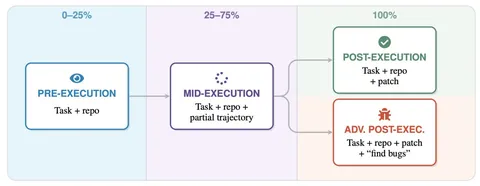

Представим ситуацию: инженеру нужно починить баг в сервисе аутентификации с помощью кодового агента. До начала работ агент сообщает, что вероятность успеха — 72%. По ходу работы меняет мнение на 78%, после всех изменений — 92%, а какой-нибудь AI-ревьюер пророчит положительный результат с вероятностью 85%. Однако по итогу патч, сделанный агентом, не работает — то есть прогнозы оказались неверны. Сегодняшняя статья о попытках избежать подобного.
Авторы вводят понятие agentic uncertainty — это оценка агентом вероятности, что другой агент на той же самой модели решит задачу. С этим понятием рука об руку идёт ещё одно — probability that I succeed (P(IS)), которое включает умения и знания, необходимые для решения задачи. Это целая траектория, так что P(IS) нельзя заложить в веса модели.
В работе ставили эксперименты на 100 задачах из SWE-bench Pro. Агенту давали репозиторий и описание проблемы. «Испытуемый» писал патч, дальше следовали тесты. Сравнивали три модели: GPT-5.2-Codex, Gemini 3 Pro и Claude Opus 4.5. Важно, что агент, который решает задачу, и агент, который оценивает результат, были построены на одной и той же модели и отличались только системным промптом и доступом к информации.
У оценщика было четыре режима опроса:
Pre-execution — только описание задачи и репозиторий на чтение. Запускать код и править файлы нельзя.
Mid-execution — агента спрашивают, как идут дела, по ходу выполнения задачи — после 25%, 50% и 75% шагов.
Post-execution — агент-оценщик получает описание задачи, а также уже пропатченный решателем репозиторий, и оценивает корректность выполнения.
Adversarial post-execution — то же самое, что и в предыдущем пункте, но с другим промптом: «Твоя работа найти проблемы, краевые случаи, режимы отказа». То есть задача ставится не просто проверить решение, а именно найти проблемы.
Результаты тестов показывают, что все модели переоценивают свои силы: на проваленных задачах агенты прогнозировали успех в 62%, а на правильно выполненных сомневались в себе в 11% случаев. То есть агенты в 5,5 раза чаще уверены, что у них всё получится.
Интересно, что pre-execution-агент, который не видел патча, лучше прогнозирует провал или успех, чем тот, который уже видел решение. Автор объясняют это тем, что, увидев патч, агент цепляется за его поверхностную правдоподобность и перестаёт думать о сложности задачи.
В mid-execution уверенность падает по ходу выполнения и вне зависимости от того, чем всё закончилось. Причём у Claude уверенность падала сильнее, когда задача решалась правильно.
Adversarial post-execution с его «найти проблемы» действительно справляется с прогнозированием успеха лучше, чем просто post-execution. Доля самоуверенных оценок с adversarial падает с 72% до 45%. Однако такой подход дороже и дольше: 23,4 шага и 0,52 цента против 12,7 шага и 0,23 центов у обычного ревьюера.
Авторы отмечают, что изменение калибровки может быть просто механическим сдвигом всех оценок вниз — при низком базовом уровне успеха любой сдвиг вниз улучшает калибровку. И это действительно так: у GPT одинаково занижаются и успешные, и неуспешные траектории. Для Claude и Gemini, впрочем, сигнал оказался настоящим.
Авторы также проверили, не завышают ли агенты оценку, когда видят собственное решение. Чтобы подтвердить это или опровергнуть, результаты дали на проверку разным моделям. GPT действительно завышает оценку на своих патчах, а Gemini, наоборот, прогнозирует более вероятный успех GPT.
Напоследок отметим, что хоть результаты в статье и показательны, стоит помнить, что авторы изучали только задачи программирования, то есть как обстоят дела на доменах с размытыми критериями — непонятно. Кроме того, было всего 100 задач, что не слишком много, и изучался исключительно промптинг — оценивающие агенты не учились под задачи верификации. Кроме того, в статье не исследована связь между масштабом модели и переоценкой. Авторы так и пишут, что нужно всё подтверждать на большем масштабе.
Разбор подготовил
Душный NLP
